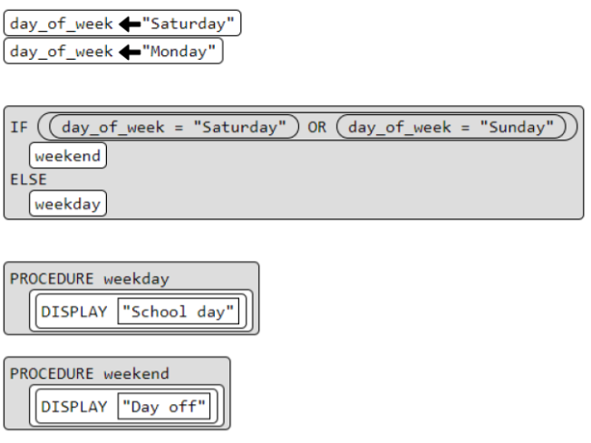

Lesson 1 C.F.U
What will the value of score be at the end of the program?
B. The score is: 4
Lesson 2 C.F.U
Explain in your own words the process of creating and updating a variable. How does the Counter Pattern with Event work?
"
Creating a variable and updating a variable is put on the top to allow for a call back to the variable in the program. Variables allow for changes in the program and are important for this reason. The Counter Pattern Event works as an event program so the initial sequential program gets disrupted and a change in an event happens.
Lesson C.F.U
1. What will be displayed after this code segment is run?
C. 6
2. The program below is run. Which of the following COULD NOT possibly be the output from that program?
10
5
10
5
Lesson 5 C.F.U
2. Can a computer evaluate an expression to something between true and false? Can you write an expression to deal with a "maybe" answer?
Yes the computer can evaluate an expression to something between true and false. A computer can't deal with a maybe answer.
Lesson 6 C.F.U
When creating an if-else-if statement you should always make your first condition the most specific. Write a short paragraph responding to the questions below.
- What does it mean to put the most specific case first?
- Why is it important to put the most specific case first? What types of errors does it help avoid?
It means to put the most selective part of the if-else-if statement or helps determine the other cases. It is important to put it first because it proves the other statements true or false, it helps avoid errors like overlooked conditions due to prior general case matches.
Lesson 7 C.F.U
What will be displayed after this code segment is run?

B. You Win!
The program below asks a user to type in a number and then will output a message. What number will a user need to input for the message "COLD" to be displayed?
A. 5
Lesson 9 C.F.U
In your own words describe the benefits of creating functions in your code?
The benefits of creating functions in my code is that it helps me organize my code better and I am able to see what is going on more effiecntly rather than having to go through lines of code and typing out long lines of code.
Lesson 10 C.F.U
What will be displayed after this code segment is run?Which of these categories are best compressed using lossy compression? Why?

A. School day